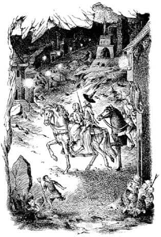

Kraliçesiz Yeraltı
Hepsi de Scrubb’ın “nefes almak” dediği şeyi hak ettiklerini düşünüyordu. Cadı kapıyı kilitlemiş ve Toprak İnsanlar’a onları rahatsız etmemelerini söylemişti, bu yüzden rahatsız edilmeyeceklerdi. Kuşkusuz ilk işleri Suratsız’ın yanık ayağıyla uğraşmaktı. Prens’in yatak odasından alınan ve şeritler halinde yırtılıp zeytinyağına batırılan bir çift bez oldukça iyi bir sargı olmuştu. Bu yapıldıktan sonra oturup bir şeyler yediler ve Yeraltı Dünyası’ndan kaçma planlarını tartıştılar.
Rilian, yüzeye çıkılabilecek bir sürü yol olduğunu, zaman zaman birçoğunu kullandığını söyledi. Ancak tek başına hiç gitmemişti, yanında hep Cadı vardı; bu çıkışlara hep gemiyle Güneşsiz Deniz’i geçerek ulaşmıştı. Limana yanında Cadı olmadan, üç yabancıyla beraber gitse ve bir gemiye onları götürmesini emretse ne olacağını kimse tahmin edemezdi. Muhtemelen bir sürü soru sorarlardı. Öte yandan, yukarı dünyanın işgali için yapılan yeni çıkış, denizin bu yakasında ve sadece birkaç mil ötedeydi. Prens çıkışın neredeyse bitirilmek üzere olduğunu biliyordu; tünelleri yeryüzünden sadece bir metrelik bir toprak ayırmaktaydı. Hatta bitirilmiş olması bile mümkündü. Belki Cadı bunu haber vermek ve saldırıyı başlatmak için geri dönmüştü. Bitmemişse bile kendileri kazarak birkaç saatte dışarıya çıkabilirlerdi; önemli olan oraya ulaşabilmek ve tünellerdeki nöbetçileri atlatmaktı. Zorluk buradaydı.
“Bana sorarsanız—” diye başladı Suratsız, ama Scrubb sözünü kesti.
“Hey, bu ses de ne?” diye sordu.
“Bir süredir ben de bunu merak ediyordum” dedi Jill.
Hepsi sesi duymuştu, ancak o kadar yavaşça artmıştı ki ilk ne zaman fark ettiklerini hatırlamıyorlardı. Önce, hafif bir rüzgâr ya da uzaktaki trafik gürültüsü gibi belirsiz bir sesti. Sonra, dalga sesine benzeyen bir hışırtıya dönüştü. Ardından gümbürtüler ve koşuşturmalar duyuldu. Artık, bağrışmalar ve gökgürültüsüne benzer sesler geliyordu.
“Aslan adına!” dedi Prens Rilian, “Bu sessiz ülke sonunda dile gelmiş gibi görünüyor.” Ayağa kalktı, pencereye doğru yürüdü ve perdeleri çekti. Bakmak için diğerleri de etrafına toplandı.
Fark ettikleri ilk şey büyük ve kızıl bir parlaklıktı. Yansıması yüzlerce metre üstlerinde, yeraltının tavanında bir kızıllık oluşturmuştu, dünya yaratıldığından beri karanlıkta kalan kayalık tavan artık görülebiliyordu. Parıltı şehrin öte yanından geliyordu, bu yüzden birçok büyük ve korkunç bina arka plandaki parıltının önünde kapkara görünüyordu. Ancak ışıklarını, oradan kaleye doğru gelen caddelere de yayıyor, bu arada caddelerde garip şeyler oluyordu. Sessiz Toprak İnsan kalabalıkları kaybolmuştu; birerli ikişerli gruplar oraya buraya koşuşturuyordu. Görülmek istemeyen insanlar gibi davranıyorlardı. Payanda ya da kapıların ardına gizleniyor, sonra korkuyor, meydanı çabucak geçip yeni gizlenme yerlerine gidiyorlardı. Cüceleri tanıyanlara en garip gelen şey, çıkardıkları seslerdi. Her yönden bağırmalar ve çığlıklar yükseliyordu. Liman tarafından, düzenli olarak güçlenen ve şimdiden şehri sarsmakta olan bir gümbürtü geliyordu.
“Toprak İnsanlar’a ne oldu?” dedi Scrubb. “Onlar mı bağırıyor?”
“Buna imkân yok” dedi Prens. “Uzun kölelik yıllarım boyunca yaramazların bu kadar yüksek sesle konuştuklarını hiç duymadım. Yeni bir şeytanlık olduğuna hiç kuşkum yok.”
“Oradaki kızıl ışık ne?” diye sordu Jill. “Bir şey mi yanıyor?”
“Bana sorarsanız” dedi Suratsız, “dünyanın merkezindeki lavların yeni bir yanardağ oluşturmak için harekete geçtiğini söylerim. Lavların içinde kalırsak şaşmam.”
“Şu gemiye bakın!” dedi Scrubb. “Neden hızla bu tarafa doğru geliyor? Kimse kürek çekmiyor ki.”
“Bakın, bakın!” dedi Prens. “Gemi şimdiden limanın bu yanında, caddede. Bakın! Tüm gemiler şehre doğru geliyor. Bence deniz yükseliyor. Sel geliyor. Aslan’a şükürler olsun bu kale yükseklerde. Su korkunç bir hızla yükseliyor.”
“Ah, neler oluyor acaba?” diye bağırdı Jill. “Yangın, sel ve sokaklarda kaçışan insanlar.”
“Ne olduğunu söyleyeyim” dedi Suratsız. “O Cadı, öldürüldüğü anda ülkesini paramparça edecek bir dizi büyü yapmış. Katilinin beş dakika sonra yanacağını, toprak altında kalacağını ya da boğulacağını biliyorsa kendi ölümüne fazla aldırmayacak türden biridir o.”
“On ikiden vurdun dostum Suratsız” dedi Prens. “Kılıçlarımız Cadı’nın kafasını kopardığında, bütün büyüler sona erdi ve şimdi derinlerdeki ülke paramparça oluyor. Yeraltının sonunu seyrediyoruz.”
“Eğer bu tüm dünyanın sonu değilse” dedi Suratsız, “haklısınız, efendim.”
“Peki burada durup bekleyecek miyiz?” dedi Jill nefes nefese.
“Bana kalırsa hayır” dedi Prens. “Avludaki ahırda duran atım Kömürkarası ve Cadı’nın atı Kartanesi’ni (soylu bir hayvandır ve daha iyi bir sahibeyi hak eder) kurtaracağım. Daha sonra da yüksek yerlere gitmek için harekete geçip bir çıkış bulmak için dua edelim. Mecbur kalırsak atlar ikişer kişi taşıyabilir ve zorlarsak selden kaçabilirler.”
“Ekselansları zırhını giymeyecek mi?” diye sordu Suratsız. “Şunların görünüşü pek hoşuma gitmiyor.” Bunu söylerken aşağıdaki yolu işaret etmişti. Herkes aşağıya baktı. Düzinelerce yaratık (artık yakında olduklarından açıkça Toprak İnsan oldukları görülebiliyordu) liman yönünden yukarıya ilerliyordu. Amaçsız bir kalabalık gibi hareket etmiyorlardı. Saldırı yapan düzenli askerler gibi davranıyorlardı, kaleden görülmemeye dikkat ederek, bir koşturup bir gizleniyorlardı.
“O zırhın içine girmeye cesaret edemem” dedi Prens. “İçindeyken kendimi ayaklı bir zindandaymış gibi hissettim, kölelik ile büyünün iğrenç kokusu içine sinmiş. Ama kalkanı alacağım.”
Odayı terk etti ve bir süre sonra gözlerinde garip bir parıltıyla geri döndü.
“Bakın dostlarım” dedi, kalkanı onlara doğru uzatarak. “Bir saat önce siyahtı ve arması yoktu; ama şimdi bu var.” Kalkan gümüş gibi parlak bir şeye dönüşmüştü ve üzerinde kandan ya da kirazlardan daha kırmızı bir Aslan şekli vardı.
“Kuşkusuz” dedi Prens, “bu arma, ister yaşamamızı, ister ölmemizi emretsin, Aslan’ın gerçek efendimiz olacağına işarettir. Yaşam da, ölüm de birdir onun için. Şimdi beni dinlerseniz diz çöküp onun resmini öpelim ve gerçek dostlar gibi el sıkışalım. Sonra da şehre inelim ve bizi bekleyen maceraya atılalım.”
Hepsi Prens’in dediğini yaptı. Ancak Scrubb, Jill’le el sıkışırken, “Elveda Jill. Korkaklık ettiğim ve bir sıçan gibi davrandığım için özür dilerim. Umarım sağ salim eve dönersin” dedi. Jill de, “Elveda Eustace. O kadar huysuzluk ettiğim için özür dilerim” dedi. İlk kez birbirlerine isimleriyle hitap etmişlerdi, okulda böyle yapmıyorlardı.
Prens kapının kilidini açtı, hep beraber aşağıya indiler. Üçü kılıçlarını, Jill de bıçağını çekmişti. Görevliler kaybolmuştu, Prens’in odasının merdivenlerinin dibindeki büyük oda boştu. Gri, hüzünlü lambalar hâlâ yanıyordu ve onların aydınlığında koridordan diğer bir koridora geçip, merdivenden merdivene inmekte hiç zorlanmadılar. Kalenin dışındaki sesler yukarıdaki odada duyulduğu gibi duyulmuyordu. Evin içinde her şey ölüm sessizliğindeydi, her yer terk edilmişti. Zemin katında, büyük salonun önündeki köşeyi döndüklerinde ilk Toprak İnsan’a rastladılar; masalardaki yemek artıklarını tıkınmakta olan domuz suratlı, beyazımsı, şişko bir yaratıktı. Tiz bir çığlık kopardı (çığlığı da bir domuzunkine benziyordu) ve tam Suratsız onu kuyruğundan yakalıyordu ki, kendini kurtararak bir sıranın altına daldı. Sonra takip edilemeyecek bir hızla uzaktaki kapıya koştu.
Salonun dışına, avluya çıktılar. Tatillerde atçılık okuluna giden Jill, yeraltı dünyası gibi bir yerde karşılaşılabilecek en güzel, en hilesiz ve en evcil koku olan ahır kokusunu fark etmişti ki, Eustace, “Aman Tanrım! Şuna bakın” dedi. Kale duvarlarının ardından bir yerden muhteşem bir fişek yükselmiş ve yeşil yıldızlar halinde parçalanmıştı.
“Havai fişekler!” dedi Jill, şaşkın bir sesle.
“Evet” dedi Eustace, “Toprak İnsanlar’ın bunları eğlenmek için patlattığını düşünmüyorsunuz herhalde! Bir işaret olmalı.”
“Bizim için hiç de iyi olmadığına eminim” dedi Suratsız.
“Dostlarım” dedi Prens, “insan bunun gibi bir maceraya atıldı mı tüm umut ve korkulara elveda demeli, yoksa ölüm ya da kurtuluş, şerefi ve aklı kurtaramayacak kadar geç gelir. Durun, güzellerim” Ahırın kapısını açıyordu. “Hey kuzenler! Sakin ol Kömürkarası! Yavaş Kartanesi! Sizi unutmadık.”
Atlar garip ışıklar ve seslerden korkmuştu. Bir mağarayla diğeri arasındaki kara delikten geçmekten dehşetle korkan Jill, tepinen ve hızla soluyan hayvanların arasına korkmadan girdi ve Prens’le birlikte birkaç dakikada atları koşumladılar. Atlar başlarını sallayarak avluya çıktıklarında çok güzel görünüyorlardı. Jill Kartanesi’ne bindi, Suratsız da arkasına. Eustace Kömürkarası’na, Prens’in arkasına atladı ve toynakların muhteşem yankısıyla yola çıktılar.
“Yanma tehlikesi yok. İyi yanı bu” dedi Suratsız etrafı gözlemleyip sağ tarafı göstererek. Sular yüz metre kadar uzaklarındaki evlerin duvarlarını dövüyordu.
“Cesaret! Oraya giden yol dik bir yokuş. Su şehrin en büyük tepesinin yarısına kadar gelmiş. Tüm bunlar yarım saatte oldu, ama sonraki iki saatte sular daha fazla yükselmeyebilir. Benim korkum şu” dedi Prens. Kılıcıyla, yabandomuzu gibi dişleri olan büyük ve uzun boylu bir Toprak İnsan’ı işaret ediyordu. Bu garip yaratık, görünmemek için evlerin gölgesine saklanan, değişik boy ve şekillerdeki altı Toprak İnsan tarafından takip ediliyordu.
Prens, parıldayan kızıl ışığın yönünde, ama birazcık sola doğru ilerledi. Planı, yeni kazı bölgelerine giden yolu bulmak için yangının (eğer yangınsa tabii) çevresinden dolaşıp yüksek bir yere çıkmaktı. Diğer üçünün aksine bundan hoşlanıyor gibi görünüyordu. Giderlerken ıslık çalıyor, Archenlandlı Şimşek Yumruk Corin hakkındaki eski bir şarkının nakaratını söylüyordu. İşin gerçeği, yıllar sonra büyüden kurtulduğuna öyle seviniyordu ki, bütün tehlikeler oyunmuş gibi geliyordu. Ancak diğerleri bunu ürkütücü bir yolculuk olarak görüyordu.
Arkalarında, çarpışan gemilerin ve çöken binaların birbirine karışan gümbürtüleri duyuluyordu. Tepelerinde, yeraltının tavanında, büyük ve parlak ışıklar vardı. Önlerinde, hiç artmamış gibi görünen o gizemli parlaklık görülüyordu. Aynı yönden çığlıkların, bağırışların, gülüşlerin, böğürmelerin ve tiz seslerin yankıları geliyordu; karanlık gökyüzünde bin bir çeşit havai fişek yükselmekteydi. Kimse bunların ne anlama geldiğini tahmin edemiyordu. Yakınlarındaki şehir kısmen o kızıl parlaklıkla, kısmen de kasvetli cüce lambalarının ışığıyla aydınlanmıştı. Yalnız bu ışıkların ulaşamadığı birçok yer vardı ve o yerler kapkaranlıktı. O yerlerde Toprak İnsanlar bir görünüp bir kayboluyor, gözlerini yolculardan ayırmıyor ve gizlenmeye çalışıyorlardı. Büyüklü küçüklü yüzler, balıklarınkine benzeyen kocaman gözler görülebiliyordu. Tüyler, kıllar, boynuzlar, fildişleri, incecik burunlar, upuzun olduğu için sakal gibi görünen çeneler vardı. Ara sıra gruplardan biri çok büyüyor ya da çok yakınlarına geliyor, prens de kılıcını savurup saldıracakmış gibi yapıyordu. Yaratıklar tiz çığlıklar atarak, öterek ve gıdaklayarak karanlığa dalıyordu.

Birçok dik yokuş tırmanarak sel sularından uzaklaşıp şehrin dışına çıktıklarında her şey ciddileşmeye başladı. Artık kızıl parlaklığa yaklaşmışlardı ve onunla aynı düzeydeydiler, ancak hâlâ ne olduğunu göremiyorlardı. Onun aydınlığında düşmanlarını açıkça görebiliyorlardı. Yüzlerce, belki de binlerce cüce oraya doğru gidiyordu. Koşuşturup duruyor, dönüp yolculara bakıyorlardı.
“Majesteleri bana sorarsa o adamlar bizim önümüzü kesmek istiyorlar” dedi Suratsız.
“Ben de bunu düşünüyordum, Suratsız” dedi Prens. “Bunlarla asla başa çıkamayız. Dinleyin! Şuradaki eve doğru gidelim. Oraya vardığımızda siz evin gölgesinde saklanın. Küçük hanım ve ben birkaç adım daha gideceğiz. O şeytanların birkaçının bizi takip edeceğine kuşkum yok; arkamızdan sürüyle geliyorlar. Suratsız, senin kolların uzun; önümüzden geçerlerken içlerinden birini canlı yakalamayı becerebilirsin. Hikâyenin aslını ya da bizimle ne sorunları olduğunu öğrenebiliriz.”
“Ama diğerleri arkadaşlarını kurtarmak için saldırmaz mı?” dedi Jill, olabildiğince sakin bir ses tonuyla.
“O zaman, Madam” dedi Prens, “bizi savaşarak ölürken göreceksiniz, Aslan yardımcınız olsun! Haydi Suratsız.”
Kıllıkıpırdak bir kedi çabukluğuyla gölgede kayboldu. Diğerleri bir dakika boyunca, dehşet içinde yürüyerek ilerlediler. Sonra arkalarından aniden Suratsız’ın tanıdık sesiyle karışan kan dondurucu çığlıklar yükseldi: “Dur artık! Bir yerini acıtmadan önce kes şu bağırmayı, yoksa gerçekten acıtırım, anlıyor musun? Herkes bir domuz öldürülüyor sanacak.”
“İyi bir av” dedi prens, Kömürkarası’nı döndürüp evin köşesine geri gelerek. “Eustace” dedi, “rica etsem, Kömürkarası’nın dizginlerini tutabilir misin?” Sonra atından indi ve Suratsız avını aydınlığa çıkarırken hep birlikte sessizce seyrettiler. Sadece bir metre boyunda çok sefil bir cüceydi. Horoz ibiği gibi (yalnız daha sert) bir ibiği ve küçük pembe gözleri vardı; çenesi ile ağzı öylesine büyük ve yuvarlaktı ki, yüzü bir suaygırınınkine benziyordu. Bu kadar zor durumda olmasalardı hepsi bu görüntü karşısında kahkahalara boğulurdu.
“Şimdi, Toprak İnsan” dedi Prens, tepesine dikilip kılıcının ucunu esirin ensesine dayayarak, “dürüst bir cüce gibi konuş ve özgürlüğüne kavuş. Hilekârlık edersen ölü bir Toprak İnsan olursun. Suratsız, güzel dostum, ağzını sımsıkı kapatırsan nasıl konuşabilir ki?”
“Konuşamaz belki ama ısıramaz da” dedi Suratsız. “Siz insanlar gibi (Ekselansları, siz üzerinize alınmayın, size saygım sonsuz) gülünç ve yumuşak ellerim olsaydı şimdiye kadar her tarafım kan içinde kalırdı. Ancak bir Kıllıkıpırdak bile ısırılmaktan bıkar.”
“Bana bak!” dedi Prens cüceye, “Bir daha ısırırsan ölürsün. Çek elini Suratsız.”
“Ooviiii!” diye çığlık attı Toprak İnsan, “Bırakın beni, bırakın beni. Ben değildim. Ben yapmadım.”
“Neyi yapmadın?” diye sordu Suratsız.
“Siz saygın insanların yaptığımı söylediğiniz şeyi” diye cevapladı yaratık.
“Bana ismini ve ne yapmaya çalıştığını söyle.”
“Ah lütfen saygın Beyler, lütfen nazik Beyler” diye inledi cüce. “Söyleyeceklerimi Ekselansları Kraliçe’ye söylemeyeceğinize söz verin.”
“Senin deyişinle, Ekselansları Kraliçe, öldü” dedi Prens sertçe. “Onu ben öldürdüm.”
“Ne!” diye bağırdı cüce gülünç ağzını kocaman açarak. “Öldü mü? Cadı öldü ha? Hem de siz Ekselanslarının eliyle?” Çok rahatlamış gibi derin bir ‘oh’ çekti ve “O zaman siz Ekselansları dostsunuz!” diye ekledi.
Prens kılıcını birkaç santim uzaklaştırdı. Suratsız yaratığın oturmasına izin verdi. Yaratık parıldayan kırmızı gözlerle dört yolcuya baktı, bir iki kere kıkırdadı ve anlatmaya başladı.